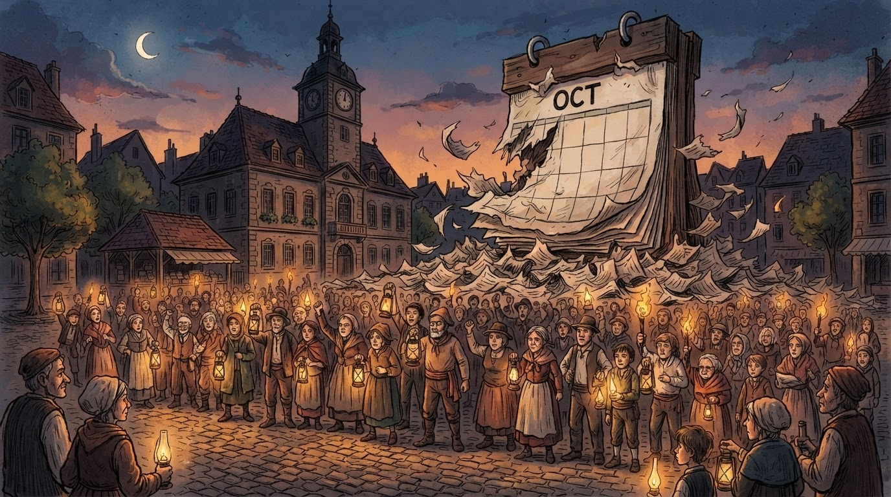

41 ditë protestë, natën e njëjtë me kalendarin e grisur. Foto: Bujar Selfie (mbërrin gjithmonë vonë, humbet numërimin).
Politikë • Shqipëria
Divjaka mbush 41 ditë protestë — kalendari lokal kërkon bashkim me durimin, jo me Lushnjën
Banorët nuk dorëzohen, sheshi mbetet i zënë, dhe redaksia jonë propozon një zgjidhje matematike: nëse dy bashki bëhen një, atëherë duhet numëruar tri.